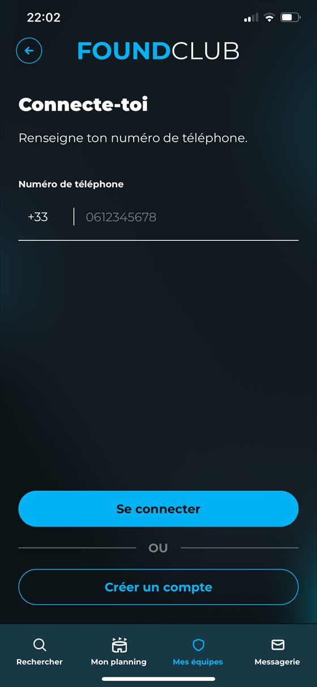
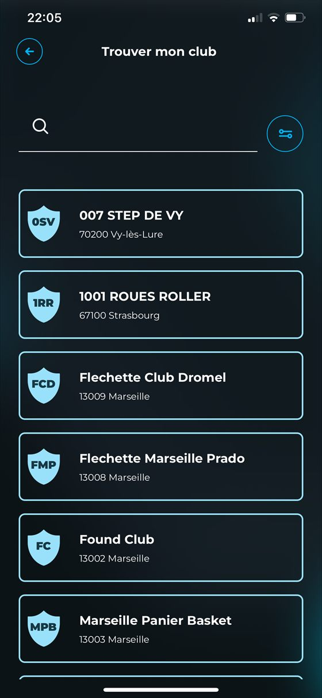
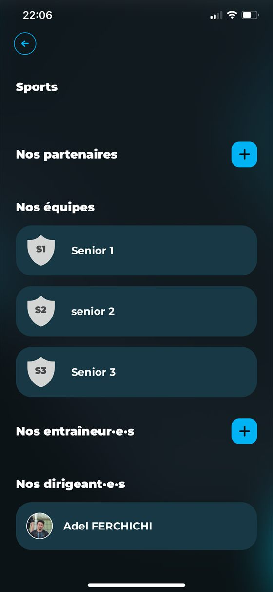

Étape 1
Créer le compte dirigeant et prendre possession du club
Le dirigeant démarre par l'inscription, retrouve le club, puis ouvre le bon parcours d'accompagnement pour structurer sa présence FoundClub.

Connexion
Le téléphone reste le point d'entrée simple pour retrouver l'accès dirigeant.

Recherche club
Le dirigeant retrouve la structure et peut lancer le bon échange avec FoundClub.

Fiche club
Une fois le club reconnu, la fiche devient le point de rassemblement des informations utiles.